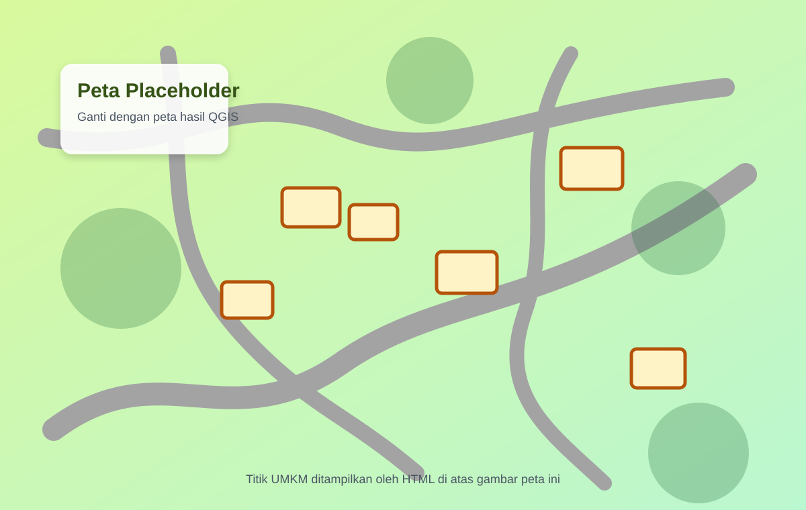

Peta
Peta Pandai Besi Dusun Krasak

Scan daftar UMKMCatatan: gambar peta masih placeholder. Ganti file assets/img/peta-dusun-placeholder.svg dengan peta hasil QGIS atau desain final.
Daftar Lokasi
Peta

Scan daftar UMKMCatatan: gambar peta masih placeholder. Ganti file assets/img/peta-dusun-placeholder.svg dengan peta hasil QGIS atau desain final.
Daftar Lokasi